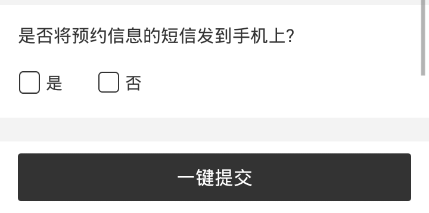
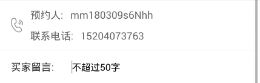
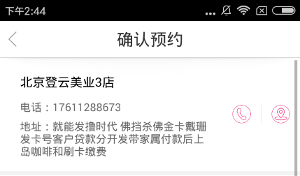
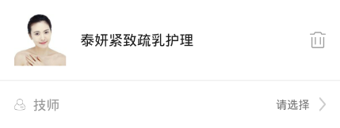
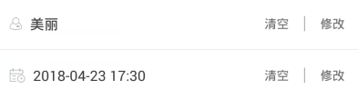

切换

1、若无技师推荐，需点击跳转技师列表页
2、技师列表页选中，返回此页面
3、选择时间，进入此技师排班页面，选择预约时间，返回此页面
4、若推荐技师无法做此项目，则预约时间时，技师时间页面显示预约已满，需要用户切换技师列表，选择可做技师。更极端情况为，此推荐店铺无法做预约项目。则技师页面为空，也无技师可做，需要切换店铺，选择可做店铺。（此情况极少，一年的数据中只有5%的用户出现换店铺预约的情景）

1、有预约历史记录的用户，进入确认预约页面，向用户推荐其历史预约最近的一次店铺（关店状态店铺不推荐），公开商品不需判断商家，私有商品不能跨商家推荐，即私有商品预约时，若最近一次预约商家是其他商家则不推荐。
2、同时推荐其最近一次预约店铺的预约技师，若1条件下的店铺关店，则技师也不推荐
3、离职技师不推荐，未排班技师预约时间显示预约已满
4、推荐技师时，若用户点击修改进入技师列表页，但未选择技师返回此页面，则推荐技师依旧存在
1、点击门店模块跳转门店主页
2、切换按钮交互单独一个块
3、若用户点击修改，进入院店列表页，但没选择返回此页面，则保留推荐店铺